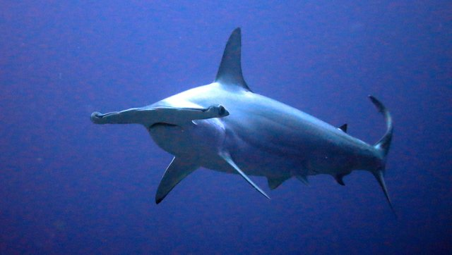
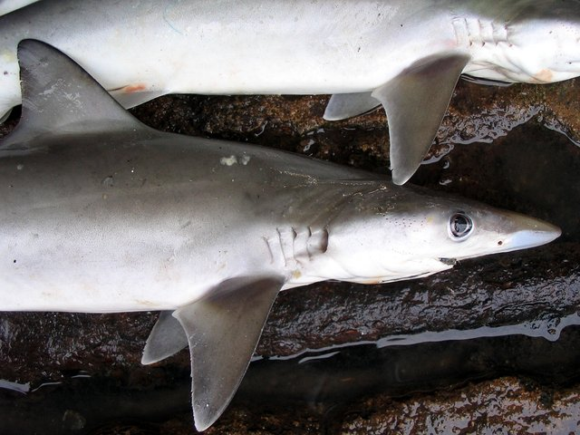
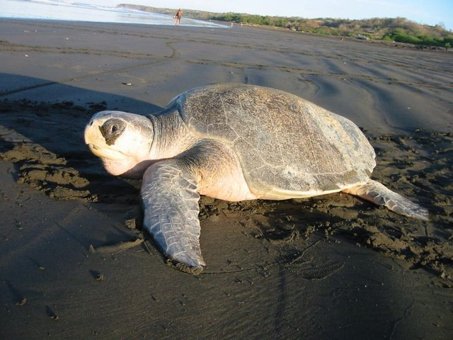

Part E · Chapter 2
Encoders and CLIP
Teach one network to read photos and another to read captions, so that a caption can name what a photo shows
An encoder turns a photo or a piece of text into a vector. CLIP trains an image encoder and a text encoder together, on photos paired with their captions. The aim is that the vector of a photo ends up closest to the vector of its own caption. The result classifies photos by comparing them with captions, so a new class needs a sentence and no new training. This chapter shows how encoders are trained, builds CLIP's similarity matrix and loss from shark photos, and then asks what happens in murky water.
The numbers come from OpenAI's CLIP ViT-B/32 and from a masked autoencoder, run offline on the shark photos and shipped as small files. The chapter reports what these models do on 14 photos, and that is a small test. Photos are credited under the figures.
You will need: vision transformers (E1), cosine similarity (D2, 0.5), softmax and temperature (0.7), cross-entropy (D3) and murky water (C3).
What an encoder does
Guess first. A photo of a hammerhead and the words "a scalloped hammerhead swimming in open blue water" are different kinds of data. How could a computer say that they match? What would you need to compute from the two?
- encoder
- a network that turns an input into one vector that summarises it
- image encoder, text encoder
- an encoder whose input is a photo, or a piece of text
- embedding
- the vector an encoder gives (D2); here 512 numbers
- cosine similarity
- the dot product of two vectors divided by their lengths (0.5)
An encoder turns an input into one vector. If the encoder of photos and the encoder of text are trained to agree, a photo and its description get nearby vectors, and a cosine compares them.
Photo vector, the first 40 of 512 numbers (teal positive, coral negative)
Text vector, the first 40 of 512 numbers
Cosine of this photo with the nine species prompts "a photo of a ..." (the chosen text is outlined if it is one of them)
Credits of the 14 photos
A photo and a text that match have a cosine of about 0.3, and the cosines that decide the answer differ by about 0.01. For the hammerhead photo the nine species prompts score from 0.21 to 0.34.
Pick a photo and a text. The photo goes through the image encoder, which in this CLIP model is a ViT-B/32 (E1). The photo is cut into 49 patches of 32 by 32 pixels and a class token is added. Twelve blocks follow, and a linear layer turns the class vector into 512 numbers. The text goes through the text encoder, a transformer with 12 layers, width 512 and 8 heads. It reads text as tokens (D1, a vocabulary of 49,152) with a start and an end token, uses a causal mask (D4), and takes the vector at the end token. The two towers have 87.8 million and 63.4 million numbers (counted from the released model). Both vectors are scaled to length 1 before they are compared, so the dot product is the cosine.
\[ \cos(\mathbf{u},\mathbf{v}) = \frac{\mathbf{u}\cdot\mathbf{v}}{\lVert\mathbf{u}\rVert\,\lVert\mathbf{v}\rVert} = \sum_{j=1}^{512} u_j v_j \quad\text{when}\quad \lVert\mathbf{u}\rVert = \lVert\mathbf{v}\rVert = 1 \]
- \(\mathbf{u}\) is the vector of the photo and \(\mathbf{v}\) the vector of the text, both with 512 numbers. \(\lVert\cdot\rVert\) is the length of a vector (0.5).
- With unit length vectors the lengths are 1 and the cosine is the sum of 512 products. A typical number in a unit vector of 512 numbers has size about \(1/\sqrt{512} = 0.044\), which is why the strips above are pale.
A second worked case. The same network gives four average cosines on the 14 photos of this chapter. A photo with another photo gives 0.71. A caption with another caption gives 0.51. A photo with its own caption gives 0.32, and a photo with the captions of the other photos gives 0.22. The matching pair is only 0.10 above the mismatched ones, and far below the 0.71 of photo to photo. Photos and texts live in one space but do not mix evenly. The shared space section shows why. Where it works: the names of the nine species can be compared with the photos directly. An ImageNet classifier has a fixed list of 1,000 outputs and cannot do this. Where it breaks: a cosine says "more like this than like that". It is a score and has no probability scale.
Common belief. CLIP reads the caption, looks at the photo, and then decides whether they match.
Why it fails. The two encoders never see the input of the other. The photo is encoded alone, the text is encoded alone, and the comparison is one dot product afterwards.
Better account. Two separate encoders and one cheap comparison. A photo can be encoded once and compared with any number of texts later, which is what makes zero-shot classification and photo search fast.
Debug tip. Compare vectors only when they come from the same model and have the same length. A longer vector wins a dot product for no good reason, so scale to length 1 first. Vectors from two different CLIP models, or from CLIP and a sentence encoder like the one in D2, cannot be compared at all.
import numpy as np
rng = np.random.default_rng(4127)
u = rng.normal(size=512) # made-up photo vector
v = 0.3 * u + rng.normal(size=512) # made-up text vector that shares some of its signal
u = u / np.linalg.norm(u); v = v / np.linalg.norm(v) # scale both to length 1
print(round(float(np.linalg.norm(u)), 1), round(float(u @ v), 3))
print(round(float(np.sqrt((u ** 2).mean())), 3)) # the typical size of one of the 512 numbers1.0 0.26 0.044
These two vectors are made up. Their cosine is the dot product once both have length 1, and the typical number in a unit vector of 512 numbers is 0.044, as above.
Quick quiz
Why can a photo be encoded once and compared with many captions?
The image encoder does not read the caption, so its vector does not depend on it. A new caption needs one text encoding and one dot product.
The cosine of a photo with its own caption is about 0.32. Is the match weak?
Not necessarily. It is the size of the gap to the other captions (about 0.10 on average) that decides the ranking. The next sections show how that gap is turned into probabilities.
Three ways to train an encoder
Guess first. To train an image encoder you need a task whose answer is known. Name two tasks that would force a network to learn useful features of photos. What would they cost to prepare?
- label
- a name that a person attaches to an input, such as "hammerhead"
- masked prediction
- hide part of the input and train the network to predict the hidden part; the data supplies the answer
- self-supervised
- trained with answers taken from the data itself, with no labels added by people
- contrastive learning
- pull the vectors of matching pairs together and push the others apart
An encoder is trained by a task with a known answer: a label, a hidden piece, or a matching pair. The three need different data and teach different things.
The photo has a label chosen from a list of 1,000 names. The network gives 1,000 scores, softmax turns them into probabilities, and the loss is the cross-entropy of D3: the negative log of the probability given to the true label.
What the encoder sees (grey patches are hidden)
The network's guess for the whole photo
No list of labels. The data is pairs: a photo and the caption written for it. The network must tell which caption belongs to which photo in a batch (next section).



A photo should be nearest to its own caption and far from the others. These three pairs are from this chapter's photos.
With 75% of the patches hidden, the guess for the hammerhead photo is off by 3.7 on a scale of 0 to 255. For the bamboo shark in its tank it is off by 17.1. The error is the mean absolute difference over the hidden pixels. Reconstructions are from facebook/vit-mae-base, with the same random mask for both photos.
The figure has three tabs, one for the three ways. It starts on masked prediction because that one has pictures.
Labels. This is the supervised learning of A1. The torchvision ViT-B/16 of E1 was trained on ImageNet-1k, whose labels cover 1,000 names and 1.28 million training photos (the CLIP paper gives the second number). A network trained this way can only name those 1,000 things. It has three shark classes and no spadenose shark, so it called the spadenose crop in E1 an eel. A worked case: if the network gives the true label probability 0.88, the loss is −ln 0.88 = 0.13. A network that guessed among 1,000 names would have a loss of ln 1,000 = 6.9. Move the slider.
Masked prediction. BERT (D5) picks 15% of the tokens of a text, replaces most of them by a [MASK] symbol and predicts the originals (Devlin and others, 2019). The masked autoencoder (MAE, He and others, 2022) does it for photos. It hides 75% of the patches of a photo and runs the encoder on the visible patches only. A small decoder gets the encoder's output and one placeholder per hidden patch, and it rebuilds the pixels. The loss is the mean squared error on the hidden patches only. The slider shows reconstructions made by a trained network. At 25% hidden the guess is close. At 90% hidden the network paints plausible blur: the shark's outline is right and the bands on the bamboo shark are gone. No person wrote a label, so the data needed is a pile of photos. The ViT paper tried a simpler version of the idea in a first test, predicting the mean colour of hidden patches. ViT-B/16 reached 79.9% on ImageNet, 2 points above training from scratch and 4 points below supervised pre-training (Dosovitskiy and others, 2021).
Contrastive pairs. CLIP uses 400 million image and text pairs collected from the internet (Radford and others, 2021). The caption is the label, written by whoever posted the photo, and it can name anything. Cost: the pairs are noisy, since a caption may be wrong or say little, and the model inherits the web's habits. The model card of the released model lists deployed use as out of scope and warns that its results change with the class list. The rest of the chapter treats it as a model to test.
\[ \ell_{\text{label}} = -\ln p_y,\qquad L_{\text{mask}} = \frac{1}{|H|}\sum_{i\in H}\lVert\hat{\mathbf{x}}_i-\mathbf{x}_i\rVert^2 \]
- \(p_y\) is the probability that softmax gives to the true label \(y\) (0.7).
- \(H\) is the set of hidden patches, \(\mathbf{x}_i\) the true pixels of patch \(i\) and \(\hat{\mathbf{x}}_i\) the network's guess for them.
Common belief. A network that rebuilds a photo well has learned what is in it.
Why it fails. The blue water is easy to rebuild and tells little about the shark. The error of the guess is 3.7 for the hammerhead photo and 17.1 for the bamboo shark. Neither number tells you whether the encoder would separate a hammerhead from a milk shark.
Better account. Rebuilding is a training task. Whether the features are useful is tested afterwards on a task that matters, such as classification with a few labels. The ViT paper did that for its masked version (79.9%).
Debug tip. If a masked-prediction run reaches a low loss on the first day, check that the loss is computed on the hidden patches only. Averaged over all patches it rewards copying the visible ones.
Quick quiz
Which of the three needs no list of classes?
Masked prediction needs no labels at all. Contrastive learning needs pairs but no list, since the caption is free text. Only the label method needs a fixed list.
Why does MAE hide as much as 75% of the patches?
Neighbouring patches are alike, so hiding few of them makes the task a matter of copying. With most of the photo hidden the network must use what it knows about objects. He and others (2022) report that this ratio works well, and it also makes the encoder cheaper, since it reads only a quarter of the patches.
CLIP's similarity matrix
Guess first. You have a batch of N photos and their N captions, shuffled. You compute the cosines of all photos with all captions. Which entries should be high, and what would you want to be true of a row?
- similarity matrix
- the N by N table of cosines of N photos (rows) with N captions (columns)
- positive pair, negative pair
- a photo with its own caption (the diagonal), and with any other caption (the rest)
- contrastive loss (InfoNCE)
- softmax over a row or a column, then the negative log of the diagonal entry; low when the true pair wins
- batch
- the set of pairs used in one training step (B3)
CLIP trains on a table of cosines. The diagonal contains the true pairs, and the loss asks the rows and the columns to pick their diagonal entries.
Choose the batch: click photos to add or remove them (at least two). A photo brings its own caption.
The loss of this batch
The working for the selected row (click a row)
Captions were written for this chapter from the Wikimedia descriptions of the photos.
Credits of the 14 photos
Six different animals give a loss of 0.006. Add the second hammerhead and the second milk shark photo, and the loss rises, since two captions now fit one photo. The coral outline marks the diagonal. At the learned temperature a wrong top choice costs far more than a right one saves.
Start with the six distinct animals (press "Pick 6 different animals"). The highest cosine of a row is on the diagonal, with gaps of 0.03 to 0.18, and the loss is close to zero. Now press "Pick all 14". The photos include pairs that a caption describes equally well: two hammerheads, two milk sharks, two Ganges drawings. For the hammerhead photo from Costa Rica, the caption of the other hammerhead photo scores 0.340 and its own caption 0.325. Its own caption is not on top, and the loss of that row grows. With all 14 pairs, the own caption is the top choice for 9 of the 14 photos, and the own photo is the top choice for 10 of 14 captions. The loss is 0.76 at the learned temperature.
The loss in two steps, as the boxes show. Step 1: divide the row of cosines by the temperature T and take a softmax, which gives the probability that the photo belongs to caption j, for all j. Step 2: take the negative log of the probability of the true caption. Do the same down the columns (which photo belongs to this caption), average the two, and the result is the loss of the batch. A worked row: the diagonal cosine is 0.325 and the best rival is 0.340. At T = 0.01 the logits are 32.5 and 34.0, and the difference is 1.5. The other captions score far lower, so the true caption gets 1 / (1 + e1.5) = 0.18 of the probability. The loss of that row is −ln 0.18 = 1.7.
\[ L = -\frac{1}{2N}\sum_{i=1}^{N}\left[\ln\frac{e^{s_{ii}/T}}{\sum_{j=1}^{N}e^{s_{ij}/T}} + \ln\frac{e^{s_{ii}/T}}{\sum_{j=1}^{N}e^{s_{ji}/T}}\right],\qquad s_{ij} = \cos(\mathbf{u}_i,\mathbf{v}_j) \]
- \(\mathbf{u}_i\) is the vector of photo \(i\) and \(\mathbf{v}_j\) the vector of caption \(j\). \(s_{ij}\) is their cosine, the entry in row \(i\) and column \(j\) of the matrix.
- The first term is the softmax over row \(i\): which caption belongs to photo \(i\). The second is the softmax over column \(i\): which photo belongs to caption \(i\).
- \(T\) is the temperature (D3). The CLIP paper writes \(\tau\). CLIP learns it and clips it so that dividing by it never multiplies by more than 100, which means \(T \ge 0.01\). The released model has the value 100 for the multiplier, so \(T = 0.01\).
- With no information, all entries of a row are equal, all probabilities are \(1/N\) and the loss is \(\ln N\). This is the "chance level" in the boxes. The form is the InfoNCE loss of van den Oord and others (2018), used with a batch of 32,768 pairs by Radford and others (2021).
Why the batch is large. A photo is compared with N − 1 wrong captions in its row. All of them are negative examples that cost no extra encoding, since they are already in the batch. A larger batch makes the task harder, which usually helps the features. With 32,768 pairs the matrix has 1,073,741,824 entries, and the loss still needs only the two encoders run 32,768 times. Where it misleads: a caption that fits two photos is a negative for one of them, and the loss punishes the network for a fair choice. The pairs of this page show that effect with hammerheads and milk sharks.
Common belief. The loss pushes all photos and all captions to the same vector.
Why it fails. If all vectors were equal, all cosines would be equal and all rows would give probability 1/N. The loss would be ln N, the value of a model with no information. The loss rewards differences between the diagonal and the rest.
Better account. It asks for the true pair to be closer than the other pairs in the batch. It does not ask for any pair to reach cosine 1.
Debug tip. A contrastive loss that stays at \(\ln N\) means that the network has learned no useful features. Look for a batch where captions are shuffled relative to photos, or for vectors that are not scaled to length 1. A loss of zero early on usually means duplicated pairs or leaked identifiers in the captions.
import numpy as np
# cosine of 4 photos (rows) and their own captions (columns), from CLIP ViT-B/32:
# two hammerheads, then two milk sharks
S = np.array([[0.320, 0.318, 0.241, 0.238],
[0.340, 0.325, 0.211, 0.212],
[0.242, 0.254, 0.324, 0.329],
[0.165, 0.167, 0.265, 0.280]])
def cross_entropy_diag(L):
L = L - L.max(1, keepdims=True) # stable softmax over each row
log_p = L - np.log(np.exp(L).sum(1, keepdims=True))
return -np.diag(log_p).mean() # the true pair is on the diagonal
def clip_loss(S, T):
L = S / T
return (cross_entropy_diag(L) + cross_entropy_diag(L.T)) / 2
for T in (1, 0.1, 0.01):
print(T, round(clip_loss(S, T), 4))
print(S.argmax(1)) # the caption each photo likes best1 1.3399 0.1 1.0375 0.01 1.3646 [0 0 3 3]
Read the output. Chance for 4 pairs is ln 4 = 1.386, and T = 1 is close to it, since all cosines then look alike. Photos 2 and 3 pick the wrong caption. So at T = 0.01 the loss (1.36) is higher than at T = 0.1 (1.04). A low temperature makes the model confident, and confident mistakes cost the most.
Quick quiz
What is the loss of a batch of 8 when all entries of the matrix are equal?
All rows and columns give probability 1/8 to the diagonal entry, so the loss is ln 8 = 2.08.
Why are the rows and the columns both used?
The rows teach "which caption fits this photo" and the columns "which photo fits this caption". The two questions are not the same, and using both gives the image encoder and the text encoder the same kind of training signal.
Temperature
Guess first. The cosines of a photo with nine species names lie between 0.20 and 0.34. If you turn them into probabilities with a softmax directly, so that T = 1, what do the nine probabilities look like? What would you divide by to make the top name show clearly?
- temperature T
- the number the scores are divided by before softmax; small T sharpens, large T flattens (D3)
- logit
- a score before softmax; here the cosine divided by T
- effective number of choices
- e raised to the entropy; the number of equal choices that would be as uncertain (D3)
Cosines are small and close together. Dividing them by a small temperature stretches the gaps, so that a difference of 0.01 turns into a visible preference.
At T = 1 the nine probabilities are within a few points of 11%. At T = 0.01 the top caption of the hammerhead photo takes 46% and the runners-up share the rest. The teal bar is the name that matches the photo; the outlined row is the top call.
Slide T from 1 down to 0.001. The cosines do not change: they are the same nine numbers (hammerhead photo against "a photo of a ..." and a species name). Only the division changes. A worked case with the gap between the two best captions, 0.337 and 0.331, which is 0.006. At T = 1 the odds between them are e0.006 = 1.006, a coin toss. At T = 0.01 the gap becomes 0.6 in logits and the odds e0.6 = 1.8. At T = 0.001 the gap is 6 and the odds are 403. The figure uses the unrounded cosines, so its boxes show 5.8 and 330 here. Odds grow fast with the gap, so a small rounding changes them a lot.
CLIP learns T during training and does not set it by hand. It starts at 0.07 and is stopped from going below 0.01, because the paper found that a larger multiplier made training unstable (Radford and others, 2021). The released model has reached the limit, 0.01. Two practical notes. A model that is well trained for a ranking can give poor probabilities. A probability of 46% at T = 0.01 is a statement about gaps in cosine, and nobody has checked it as a frequency (A4, calibrated). Using the same temperature in the loss and in zero-shot classification keeps the two consistent. The model was trained to get its matches right when the logits were stretched by 100.
\[ p_k = \frac{e^{s_k/T}}{\sum_{j} e^{s_j/T}},\qquad H = -\sum_k p_k \ln p_k,\qquad N_{\text{eff}} = e^{H} \]
- \(s_k\) is the cosine of the photo with caption \(k\) and \(p_k\) the probability of caption \(k\). \(H\) is the entropy of the nine probabilities (D3), and \(N_{\text{eff}}\) the effective number of choices.
- If \(T\) is large, all the \(s_k/T\) are near 0 and \(p_k \approx 1/9\). If \(T\) is small, the largest cosine takes all the probability.
Common belief. A temperature is a setting for sampling, and unrelated to how a model is trained.
Why it fails. In CLIP the temperature is inside the loss. It decides how sharply a gap of 0.01 in cosine is rewarded or punished, and so what the encoders learn.
Better account. The same number plays two roles: it sets the training signal, and later it turns cosines into probabilities.
import numpy as np
names = ["spadenose", "milk", "bamboo", "hammerhead", "Ganges", "eagle ray", "dolphin", "clownfish", "sea turtle"]
cos = np.array([0.322, 0.331, 0.238, 0.337, 0.328, 0.289, 0.276, 0.205, 0.245]) # hammerhead photo against "a photo of a ..."
def softmax(z):
e = np.exp(z - z.max())
return e / e.sum()
for T in (0.01, 1.0):
p = softmax(cos / T)
print(T, names[p.argmax()], np.round(p, 3))0.01 hammerhead [0.102 0.251 0. 0.457 0.186 0.004 0.001 0. 0. ] 1.0 hammerhead [0.115 0.116 0.106 0.117 0.116 0.111 0.11 0.102 0.107]
These cosines are rounded to three decimals, so the probabilities differ by a point or two from the figure, which uses the unrounded values.
Quick quiz
The top two cosines differ by 0.02. At T = 0.01, how many times likelier is the top caption?
The gap in logits is 0.02 / 0.01 = 2, and the odds are e2 = 7.4.
Does lowering T change which caption is on top?
No. Division by a positive number keeps the order. It changes how much of the probability the top caption takes.
The shared space
Guess first. Photos and captions are trained to match, so you may expect them to be mixed in one cloud, with a caption near its photo. Draw the 512 numbers in 2 dimensions: do they mix, or do photos form one group and texts another?
- shared space
- the 512-number space in which photos and texts both get a vector
- PCA
- a projection to 2 dimensions that keeps as much of the spread as possible (the second map of D2)
- modality gap
- the distance between the cloud of photo vectors and the cloud of text vectors (Liang and others, 2022)
Photos and captions share one space, but they form two separate clouds. Matching pairs are nearer than mismatched ones, and still far apart.
Credits of the 14 photos
As computed, the first axis separates photos from texts and keeps 35% of all the spread, and the 14 photos pile up in one corner. With the average of the groups removed, the first axis keeps 14%. Click a photo or a text to see its nearest neighbours of the other kind.
The map shows the 14 photos (round, with the photo inside), their 14 batch captions (coral diamonds), the nine species prompts (sand, labelled) and nine other texts (grey). The 512 numbers were projected to two axes by PCA, so the map keeps only part of the structure. As computed, the two axes keep 35% and 9% of the spread. Press "Zoom on the photos" to see them apart: the same map, rescaled, with the texts out of view. Then press "Groups centred": the average photo vector is subtracted from all photo vectors, the average text vector from all text vectors, and the map is made again. The two clouds fall on top of one another and photos move next to the texts about the same subject. The average photo vector and the average text vector are 0.93 apart (unit vectors are at most 2 apart). The readout lists the cosines of the original vectors, and only the picture moves.
Why a gap, and what it means. Liang and others (2022) name two causes. The encoders start with vectors in narrow cones, so the two kinds of vector begin apart. Contrastive training then keeps them apart, by a distance that depends on the temperature. The gap is a fact about this model's geometry, so a mistake to avoid is to read a small cosine between a photo and a text as "does not match". Raw cosines between a photo and a text are about 0.2 to 0.35, and what counts is the comparison with the other texts.
Analogy. A map of a city with photos of places and the names of places. A name should lie near its photo.
Where it breaks. In this space all names are on one side of the city and all photos on the other. A name is still nearest to its own photo, but they are never at the same spot, and a straight line from a photo to its name crosses empty space. The map is a flat view of 512 dimensions, so nearness on it is only a rough guide.
Debug tip. When you project embeddings, say what the axes keep. The first two axes here keep 35% and 9% of the spread, so two points that look close on the map can be far apart in 512 numbers. Check with the cosines (the readout lists them).
import numpy as np
rng = np.random.default_rng(4127)
common = rng.normal(size=512); common /= np.linalg.norm(common)
side = rng.normal(size=512); side /= np.linalg.norm(side)
photos = 0.7 * common + 0.45 * side + rng.normal(0, 0.02, size=(14, 512)) # made-up photo vectors in one cone
texts = 0.7 * common - 0.45 * side + rng.normal(0, 0.02, size=(14, 512)) # made-up text vectors in another
photos /= np.linalg.norm(photos, axis=1, keepdims=True)
texts /= np.linalg.norm(texts, axis=1, keepdims=True)
print(round(float(np.linalg.norm(photos.mean(0) - texts.mean(0))), 2)) # distance between the two averages
print(round(float((photos @ photos.T).mean()), 2), round(float((photos @ texts.T).mean()), 2))
pc, tc = photos - photos.mean(0), texts - texts.mean(0) # remove each group's average
print(round(float(np.linalg.norm(pc.mean(0) - tc.mean(0))), 2))0.96 0.79 0.33 0.0
These vectors are made up, in two cones, with numbers chosen to look like the CLIP figures above. The two averages are about 0.9 apart, photos resemble photos more than they resemble texts, and removing the average of a group closes the gap. In the CLIP model the cosine between a photo and a text still ranks the matching caption high.
Quick quiz
Do photos and captions form one mixed cloud in CLIP?
No. They form two clouds with a gap between them. A caption is nearest to its own photo among the photos, but a photo is nearer to other photos than to any caption.
The cosine of a photo with its caption is 0.32. How do you judge it?
By comparison with the same photo's cosines with other captions, since the whole range of photo-to-text cosines is low because of the gap.
Zero-shot classification
Guess first. You have never trained CLIP on a hammerhead label. You give it a photo and five species names. How would you get a probability for the names, and what do you expect the model to do with five sharks that look alike?
- zero-shot
- classifying with classes the model was never trained on with labels; the classes are named in text at the moment of use
- prompt template
- the sentence frame around a class name, such as "a photo of a ..."
- candidate caption
- one text per class that the photo is compared with
To classify with CLIP, write one caption per class, encode the photo and the captions, and take a softmax over the cosines. The caption list is the classifier.
Photo (dots show whether the model is right on that photo with the captions below)
Candidate captions (tick the ones to offer)
Probability of the captions, T = 0.01
Credits of the 14 photos
With nine captions the model separates sharks from other animals on all 14 photos, and names the right shark species on 5 of the 10 shark photos. That is with the template "a photo of a ...". With the bare names it names 4 of 10, and with "in murky water" added 3 of 10.
The method has no new training. The caption of a class is its name placed in a template. The paper reports that the frame "A photo of a {label}." often helps, and by 1.3% on ImageNet. For ImageNet it also averages the text vectors of 80 different templates, which adds 3.5% more (Radford and others, 2021). Try the three templates on the chips above. On these 14 photos the species count is 5 of 10, 4 of 10 and 3 of 10 for the three templates. The counts differ by one or two photos, so do not read much into the order. Now press "Five sharks" and click through the photos. The model mixes up the shark species. Both spadenose photos are wrong (one gets milk shark, the other Ganges shark), and both drawings of the Ganges shark are called a spadenose. Press "Shark, fish or person". Now 8 of the 10 shark photos are called "a photo of a shark". So is the dolphin, and two shark photos in a tank and on ice are called fish. Coarse classes are easier than species, and still not safe.
This is the same lesson as A4's rare classes. The Ganges shark is the rarest of the five species of the made-up catch table. The class list is part of the model: the same photo gets a different answer when the list changes, because softmax shares 100% among the candidates offered. If the true class is missing, the model must pick a wrong one and may do so with high probability. The model card of the released model says the same: performance changes with the class list, so any use needs tests on the class list you will use.
\[ \hat{y} = \arg\max_k\, \cos(\mathbf{u}, \mathbf{v}_k),\qquad p(k\mid\text{photo}) = \frac{e^{\cos(\mathbf{u},\mathbf{v}_k)/T}}{\sum_{j=1}^{K} e^{\cos(\mathbf{u},\mathbf{v}_j)/T}} \]
- \(\mathbf{u}\) is the photo vector and \(\mathbf{v}_k\) the vector of the caption of class \(k\). \(K\) is the number of candidate captions, and \(T = 0.01\) as in the loss.
- The ranking needs only the cosines. The probabilities add the temperature and depend on the other candidates.
Common belief. Zero-shot means the model knows the class without having seen it.
Why it fails. The model has seen many photos paired with words, and the class is zero-shot only for the labels of this task. A name that is rare in captions leaves little to learn from. The shark results above fit that, though this chapter did not count captions.
Better account. Zero-shot means no training on this task's labels. It still depends on how much of the web speaks of the thing.
Debug tip. If a zero-shot result looks wrong, test with a short list of two or three captions you are sure about, then add classes. And test several templates: they can change results by several points on a small set.
import numpy as np
names = ["dolphin", "sea turtle", "clownfish"]
cos = np.array([0.276, 0.245, 0.205]) # the hammerhead photo against "a photo of a ...": its true class is not offered
z = cos / 0.01
p = np.exp(z - z.max()); p /= p.sum()
print(np.round(p, 3))
print(names[p.argmax()])[0.956 0.043 0.001] dolphin
The probabilities add to 1 over the captions offered, so the hammerhead photo is called a dolphin with 96%. The model has no way to say "none of these".
Quick quiz
What is the classifier in zero-shot CLIP?
The list of captions, one per class. Change the list and you change the classifier, with no training.
A photo of a clownfish is offered only the captions "a photo of a milk shark" and "a photo of a hammerhead shark". What does CLIP return?
One of the two, with probabilities that add to 100%. The true class is not offered, so the answer is wrong whatever the probabilities.
The same in murky water
Guess first. C3 showed that a ResNet-18 trained in clear water loses its shark calls as the water gets murky. CLIP saw 400 million pairs from the web, probably with many kinds of water. Does it keep its calls in murky water? And would adding "in murky water" to the captions help?
- shark mass
- the probability that the model gives to all shark captions together
- false alarm
- a high shark mass on a photo that is not a shark
- depth.py
- the simple model of light in water used in C3, now run in your browser
CLIP also fails in murky water. Averaged over the three non-shark photos, its false alarms stay under 10% until about 16 m of the simple depth model, then grow, much as those of ResNet-18 do.
Probability of the nine captions at this depth
This photo against depth: CLIP and ResNet-18
Species right on 8 photos, for three templates
For the three photos that are not sharks, CLIP's shark mass is 1% at 0 m, 3% at 10 m, 21% at 20 m and 50% at 30 m. For ResNet-18 the shark confidence of the same photos is 30% at 0 m, because it calls the dolphin photo a shark class. At 10, 20 and 30 m it is 6%, 21% and 46%. The depth effect is the simple model of C3, not a measurement of Mumbai water.
Slide the depth and watch the photo and the probabilities. The CLIP numbers are computed in advance (the eight photos at 16 depths), while the photo you see is made in your browser by the same model as in C3. With the template "a photo of a ..." the model names the right species on 7 of 8 photos at 0 m and 10 m. It is right on 6 of 8 at 20 m and 4 of 8 at 30 m. For the five shark photos the mean shark mass is 1.00 at 0 m, 0.89 at 20 m and 0.64 at 30 m. At 30 m the clownfish photo gets "hammerhead" as its top caption, and the milk shark photos get "dolphin". The wrong calls often move towards "hammerhead", a shark that is photographed in blue open water, and a deep blue frame may resemble such photos. This is a reading of the pattern and was not tested.
Two cautions. The first is about the ResNet comparison. In C3 the ResNet-18 had the 1,000 ImageNet classes and shark confidence counts three of them. Here CLIP chooses among nine captions, five of which are sharks, so the two curves answer slightly different questions, and CLIP is not shown to be better or worse. Only the kind of failure is comparable: false alarms that grow with depth. The ResNet-18 curves are the stored ones of C3, which gives 0.46 for the non-shark photos at 30 m. The second is the size of the test. Eight photos is a small set, and one photo changing its call moves the accuracy by 12.5 points. The dips and recoveries of the accuracy curve (for example at 20 m for the template with "in murky water") are within that noise.
Does naming the water help? The three templates give 49% (bare names), 66% ("a photo of a ...") and 63% ("... in murky water") when averaged over the 16 depths. Adding the water to the caption was better at 20 m (88% against 75%) and worse at 0 m (62% against 88%). The averages differ by less than one photo. So on these photos there is no evidence that it helps. The idea behind it is sound, since the text side can be changed at no training cost. A fair test needs many more photos and several dives (the group split of A4).
Bridge to my work. In my MBZUAI project, I am porting In-Place Test-Time Training, a method from ByteDance Seed, from text models to a Qwen vision-language model. The aim is a model that adapts to an input after deployment. My motivation is recognising a shark when the water, light and animals change between dives (C3, project page). The failure on this page is that kind of change. How a vision-language model is built from a ViT and a language model comes in E4.
Common belief. A model trained on a vast and varied set of photos will cope with murky water.
Why it fails. The figure shows wrong species and false alarms that grow with depth on these photos. The mix of water in CLIP's 400 million photos is not known to us, so the cause is not tested here.
Better account. A wide training set widens what a model can do, and a particular kind of water can still be rare in it. The only way to know is to test in that water, with photos from that water (C3).
Debug tip. Run the no-shift check of C3 here as well: at 0 m the figure must show the unchanged photo and the clear-water numbers. A curve that is already poor at 0 m means a bug or a bad caption list, and not murky water.
Quick quiz
Both CLIP and ResNet-18 give a growing shark mass on the non-shark photos at depth. Why is a false alarm a problem for SharkCam?
A false alarm is a dive frame that the robot would flag as a shark, and the people checking the flags (A4) would spend time on empty water.
What would you need to claim that "in murky water" in the caption helps?
You need many more photos from many dives and a held-out set that was not used to choose the wording. You need the same test for several templates, and a difference that is larger than the change from one photo.
Exercises
Theory
theory A batch has N = 8 pairs and the model gives all 64 cosines the same value. Find the row loss, the column loss and the batch loss. Then find the loss for N = 32,768 and say what it tells you about training with a small batch.
Hint
When all entries of a row are equal, softmax gives the entries the same probability, 1/N.
theory The top two cosines of a photo are 0.337 and 0.331. Find the odds between the two captions at T = 1, 0.1, 0.01 and 0.001. Then find the probability of the top caption at the four temperatures if only these two captions are offered.
theory Show that the loss does not change if you add the same constant to all cosines. Then show that dividing all cosines by 2 has the same effect on the loss as doubling T. What does the first fact say about the "gap" of the previous section?
Hint
Write the softmax of a row with \(s_{ij}+c\) and take the factor \(e^{c/T}\) out of the numerator and the denominator.
theory A text encoder reads the vector at the end token and a ViT reads the class token. Explain what the two have in common and why the text encoder uses a causal mask, using D4.
Practice
practice Use the four-photo matrix of the code block. Compute the loss at T = 0.03 and 0.003. Then search a grid of T from 0.001 to 1 for the lowest loss, and say why the best T is not 0.01 for this batch.
practice Build a made-up batch of 6 pairs with cosines on the diagonal near 0.32 and off the diagonal near 0.22 plus noise of size 0.03 (use a seeded generator). Compute the loss at T = 0.01 for 200 batches and report the mean and the share of rows in which the diagonal is not the top entry.
practice Use the cosines of the code block for the hammerhead photo and rank the nine species. Then offer only the three sharks "milk", "Ganges" and "spadenose" (the true class is missing). What are the probabilities, and what does this say about the class list?
Think deeper
open SharkCam wants to flag the Ganges shark, which has three records in the made-up table and almost no photos. Would you use zero-shot CLIP with a caption for it? What would you measure, with which photos, and what would a safe use look like given the model card says deployed use is out of scope?
open Design an experiment that tests whether CLIP uses the colour of the water as a cue for "hammerhead". Say which edits you would make to the photos, how many photos you would use, and how you would tell a true cue from the noise of a small set.
open The captions of the web are written by people, mostly in English, and describe what they find worth posting. Name two ways this could change what CLIP knows about sharks of the Mumbai coast, and one test for the two.
Come back later
Answer after two days and again after a week, without looking back.
Write the contrastive loss of a batch in words, say what its value is when all cosines are equal, and say what the temperature does.
Take a softmax over the row of cosines of a photo, divided by T, and take the negative log of the diagonal entry. Do the same down the column of a caption and average the two. With equal cosines the loss is ln N. A small T stretches gaps so that a difference of 0.01 is a clear preference (matrix, temperature).
In E1 a ViT keeps its call when patches are moved. How is that related to the finding here that CLIP's wrong calls move towards blue-water species as the frame gets darker?
Both say that these encoders lean on colour and texture. In E1 this keeps the call when layout is destroyed. Here it shifts the call when the colours are changed. Neither shows that colour is the only cue (E1, murky, B9).
A4 says a model that never flags the Ganges shark is 99.5% accurate on the catch table. What is the zero-shot counterpart on this page, and what would you report instead of accuracy?
A caption list that gives a common shark for all Ganges photos can still look good on accuracy over many species. Report the recall for the rare class with an interval, and the false alarms, as in A4.
Sources and further reading
- Radford, A., Kim, J. W., Hallacy, C., Ramesh, A., Goh, G., Agarwal, S., Sastry, G., Askell, A., Mishkin, P., Clark, J., Krueger, G., Sutskever, I. (2021). Learning transferable visual models from natural language supervision (CLIP). ICML 2021. arXiv:2103.00020. It is the source of the 400 million pairs, the batch of 32,768, the temperature rule and the text encoder. It also gives the pseudocode of the symmetric loss, the prompt template (1.3% on ImageNet) and the ensemble of 80 templates (3.5% more).
- OpenAI. Model card of
openai/clip-vit-base-patch32on Hugging Face, and the CLIP repository (github.com/openai/CLIP). The code of the repository has the MIT licence. The page of the model shows no licence for the weights. The model card says that any deployed use of the model, commercial or not, is out of scope, and that its results can change a lot with the class list. This page runs the model for teaching and for tests on 14 photos only. - van den Oord, A., Li, Y., Vinyals, O. (2018). Representation learning with contrastive predictive coding. arXiv:1807.03748. The InfoNCE loss.
- Devlin, J., Chang, M.-W., Lee, K., Toutanova, K. (2019). BERT: pre-training of deep bidirectional transformers for language understanding. NAACL 2019. arXiv:1810.04805. The 15% of masked tokens.
- He, K., Chen, X., Xie, S., Li, Y., Dollár, P., Girshick, R. (2022). Masked autoencoders are scalable vision learners. CVPR 2022. arXiv:2111.06377. The 75% mask, the encoder on visible patches, the loss on masked patches only.
- Licences of the masked autoencoder images. The reconstructions on this page come from
facebook/vit-mae-base, the Hugging Face version of the model of He and others (2022) from Meta AI. It was run on two crops of the shark photos. Two licences apply. The Hugging Face model card lists Apache 2.0. The original MAE repository (github.com/facebookresearch/mae) is under CC BY-NC 4.0, which allows sharing and adapting with credit for non-commercial use only. This site is non-commercial and for education only, so the images are kept and follow the stricter licence. The pictures join the credited photo with the model's guess for the hidden patches, and they are credited under the figure. - Dosovitskiy, A., and others (2021). An image is worth 16x16 words. ICLR 2021. arXiv:2010.11929. The masked patch prediction result (79.9%, with the mean colour of hidden patches as the target) and the class token (E1).
- Liang, W., Zhang, Y., Kwon, Y., Yeung, S., Zou, J. (2022). Mind the gap: understanding the modality gap in multi-modal contrastive representation learning. NeurIPS 2022. arXiv:2203.02053.
- The torchvision ViT-B/16 named in the labels paragraph is the network of E1. Its weights were trained on ImageNet-1k, and the E1 sources give its terms (non-commercial research and education) and why it is used for teaching only.
- Photos: Wikimedia Commons, credited under the figures (
data/sharks/photos.json). The depth effect is made withdata/sharks/depth.py, a simple model (C3). - The figures use data computed for this chapter by
data/make_clip.pyandmake_mae.py. Photos were squeezed to 224 by 224 pixels before CLIP, so the whole animal is in view. Three ways to fit a wide photo into a square were compared on these 14 photos, with the nine captions "a photo of a ...". Squeezing gave 9 right, centre crop gave 9 and padding gave 6, so the squeezed photos were used.